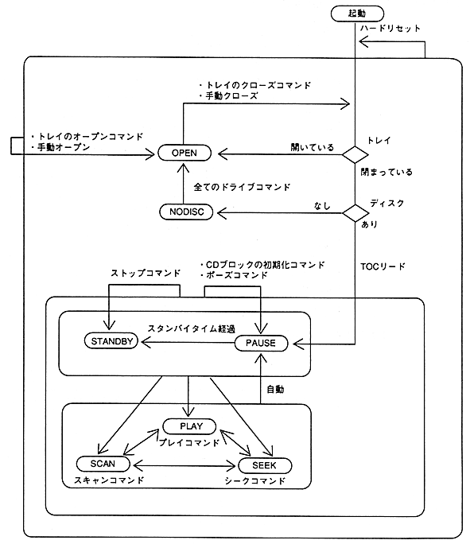

(a) After reading the TOC, it will be in the 〈PAUSE〉 state at 2 seconds 0 frame (FAD = 150 = 96H).
(B) During the state transition (on the arrow line), it will be in the 〈BUSY〉 state.
(C) Tray close command refers to a drive command other than tray open.
After the tray is closed, it will transition to the state corresponding to each command.
Example: Play command in 〈OPEN〉 state is in 〈PLAY〉 state after the tray is closed
Become.